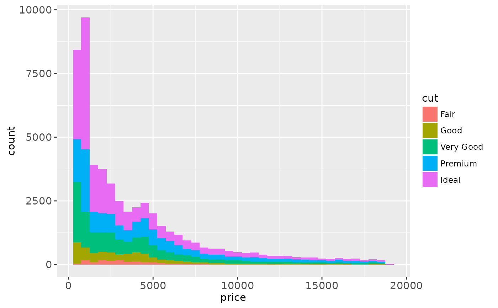
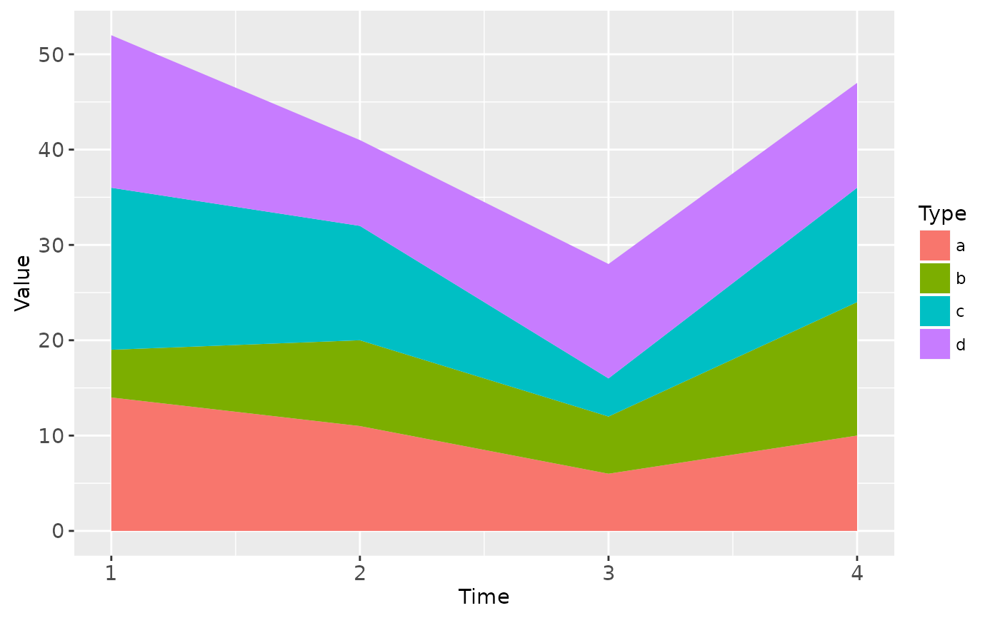
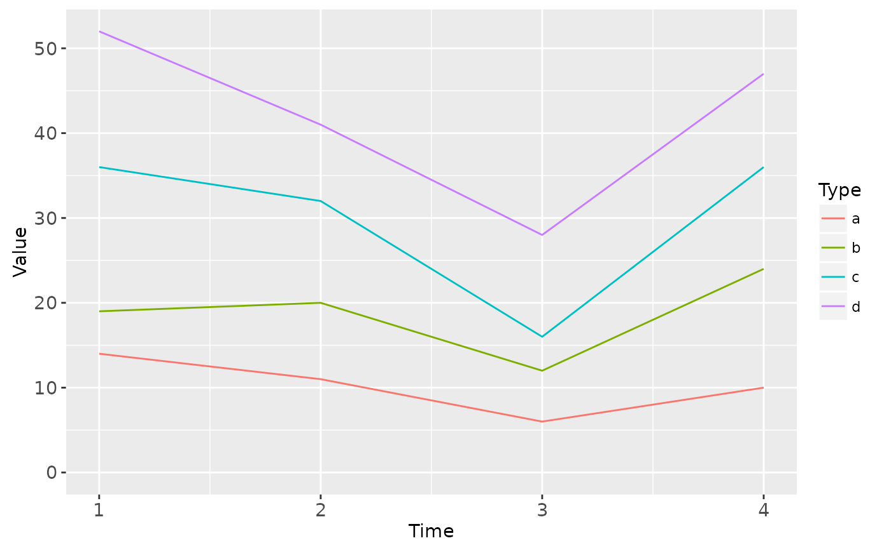

Stack overlapping objects on top of one another.
Source:R/position-fill.r, R/position-stack.r
position_stack.Rdposition_fill additionally standardises each stack to have unit
height.
See also
See geom_bar and geom_area for
more examples.
Other position adjustments:
position_dodge(),
position_identity(),
position_jitter(),
position_jitterdodge(),
position_nudge()
Examples
# Stacking is the default behaviour for most area plots:
ggplot(mtcars, aes(factor(cyl), fill = factor(vs))) + geom_bar()
# Fill makes it easier to compare proportions
ggplot(mtcars, aes(factor(cyl), fill = factor(vs))) +
geom_bar(position = "fill")
# To change stacking order, use factor() to change order of levels
mtcars$vs <- factor(mtcars$vs, levels = c(1,0))
ggplot(mtcars, aes(factor(cyl), fill = factor(vs))) + geom_bar()
ggplot(diamonds, aes(price, fill = cut)) +
geom_histogram(binwidth = 500)

# When used with a histogram, position_fill creates a conditional density
# estimate
ggplot(diamonds, aes(price, fill = cut)) +
geom_histogram(binwidth = 500, position = "fill")
# Stacking is also useful for time series
data.set <- data.frame(
Time = c(rep(1, 4),rep(2, 4), rep(3, 4), rep(4, 4)),
Type = rep(c('a', 'b', 'c', 'd'), 4),
Value = rpois(16, 10)
)
ggplot(data.set, aes(Time, Value)) + geom_area(aes(fill = Type))

# If you want to stack lines, you need to say so:
ggplot(data.set, aes(Time, Value)) + geom_line(aes(colour = Type))
ggplot(data.set, aes(Time, Value)) +
geom_line(position = "stack", aes(colour = Type))

# But realise that this makes it *much* harder to compare individual
# trends